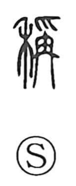

称

Uncategorized
Kun: hakaru, ageru, homeru, tonaeru | On: shou
to measure ・ to weigh ・ to raise ・ to praise ・ to name
Explanation
Shirakawa explains 称 as a phono-semantic character whose original form is 稱: the grain radical 禾 supplies the field of meaning, while the phonetic element depicts a hand (爪) lifting a scale weight (冉). The image is of putting grain on a balance; hence the core sense is to measure or weigh. When the measure comes up to the counterweight—when it matches—it yields the idea of attaining or meeting a standard. Because weighing is done by lifting the pan, the character also developed the senses to raise and, by extension, to extol or praise. The phonetic part supplies the on-reading shō.